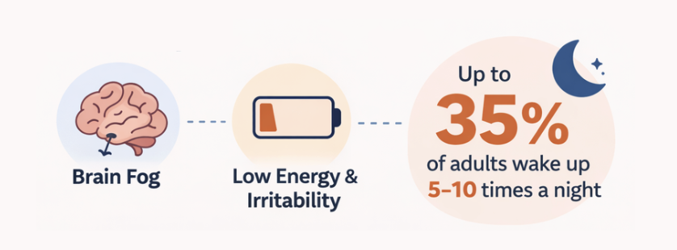
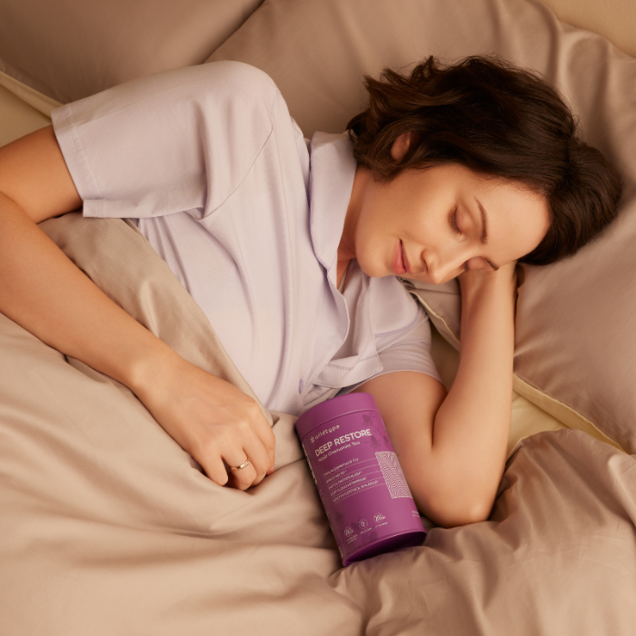

For many people, falling asleep isn't the problem. They drift off quickly, sometimes within minutes of hitting the pillow. But the night doesn't stay peaceful for long. They wake up again and again—sometimes briefly, sometimes long enough to glance at the clock—before falling back asleep. By morning, they technically logged 7–8 hours in bed, yet still wake up with a tight jaw, sore face, and that heavy, groggy feeling that makes it seem like they barely slept at all.

Sleep researchers say this kind of fragmented sleep can be more exhausting than simply sleeping fewer hours. A study published in Sleep Medicine found that people whose sleep was interrupted just 8 times per night performed significantly worse on cognitive tests the next day than those who slept only 6 uninterrupted hours. When your brain repeatedly wakes throughout the night, it struggles to complete the deeper restorative sleep cycles responsible for memory, mood balance, and physical recovery—and research shows that even micro-awakenings lasting as little as 3 seconds are enough to push the brain out of deep sleep stages. Over time, people often notice brain fog, irritability, low energy, and the strange frustration of feeling tired even after what should have been a full night's rest. Studies estimate that up to 35% of adults experience regular nighttime awakenings, yet most never identify it as the root cause of their daytime fatigue.

The confusing part is that many people try everything they can think of to fix it. They cut caffeine, buy expensive mattresses, take melatonin, try meditation apps, or completely overhaul their nighttime routine. Some see small improvements, but for many the random nighttime awakenings keep happening. That's because fragmented sleep is often tied to deeper biological factors—like stress hormones, mineral imbalances, or nervous system overstimulation—that typical sleep hacks don't actually address.
That's why recently many sleep experts and wellness practitioners have started talking about a different approach—supporting the body's natural sleep chemistry instead of forcing sedation. One product that has been gaining attention is Wildtype, a nightly tea blend designed to help calm the nervous system and support deeper, uninterrupted sleep cycles. Instead of acting like a sedative, it works by helping the body relax and stay asleep longer—so you're less likely to wake up throughout the night and more likely to wake up actually feeling rested.
